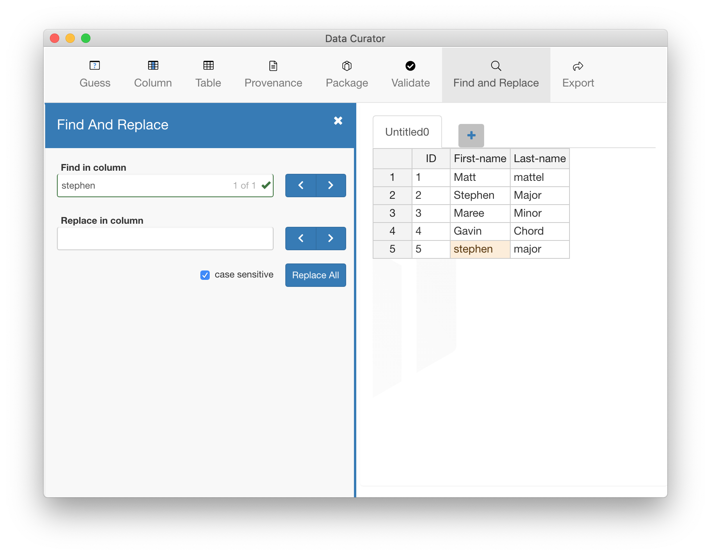

Find and replace data to quickly correct data errors. Find and Replace works in the current column, not across the whole table. You can find and replace the next or previous value, or all the values in a column at once.
Choose Find > Find, from the menu to display the Find and Replace panel. Enter the characters you want to find in the Find in column box and then press either the find previous, or find next button.
After finding the characters you want to replace, enter the characters you want replace them with in the Replace in column box, and then press either the replace previous, replace next , or Replace All button.
